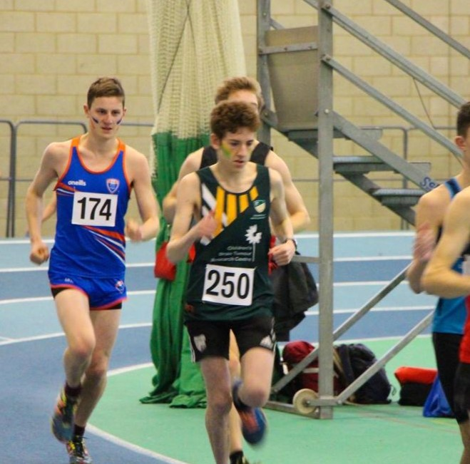
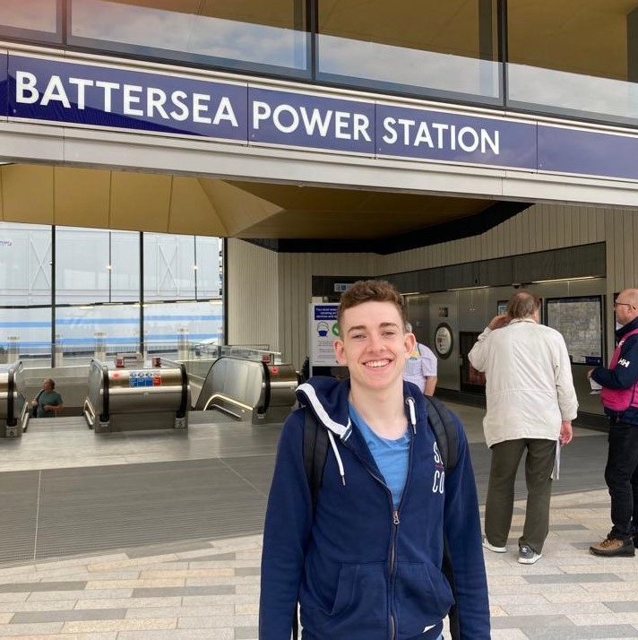

2018-2021 University of Nottingham: Economics: 2:1
I managed to achieve a 2:1 in Economics during the Coronavirus Pandemic. I balanced this with extracurricular roles such as Home Fixtures Representative for Athletics society, Commercial Ventures Director for Enactus and Brand Ambassador for Amazon.
2021-2022 Lidl Supply Chain Analyst
I was in charge of distribution of Bread, Fruit & Veg and Flowers to 43 stores in North London. During my time I naviagted allocation through Lorry Driver strikes, Brexit-related issues and major supply issues. I took initiative to improve processes and improved my communication skills through regular liasing with stores, head office and the warehouse.
2023 Travelling
I fulfilled a lifelong dream and spent three months travelling around Southeast Asia and Australia. I gained a cultral awareness and learned to adapt to new circumstances.
2023 Israeli internship for a tech firm
I spent three months working as a marketing and data analytics intern for Ryze Beyond, a digital marketing company. I used tools like Hotjar and Semrush to produce practical insights to improve the website. I learned to
2023 Web Development
Recently, I took in upon myself to learn website development and completed "HTML & CSS - Certification Course for Beginners". Using skills I learned from the course, I coded this website from scratch. I hope to improve my skills and take on bigger and more advanced projects over the coming months

Other notable experience
Brand Ambassador for 5+ years
Category Management Internship at Boots
Competitive runner
Courses in graphic design, marketing, Excel
Football fan
Interest in Transport
Marketing Intern at a Yoga Retreat in Spain
Women's Euro's Team leader

References
"From day one, it was clear that Saul was not a standard candidate...He truly went above and beyond in his internship"
Serena, Manager at Ryze Beyond
"We loved having [him] in the team and were so impressed with the quality of the work"
Bethan, Boots Category Executive
Want to get in contact?
Email: saulbwestbrook@gmail.com linkedin: check it out here
DONE///change small font///
/// what if you could hover and find out further details for ONE sec///
/// change top photos///
///little icons move///
/// change style of Achievements- more space between letters///
/// other notable style///
///content///
///centre all photos///
///wire/style going through the site///
/// bold recommendation words///
///women's euro volunteer///
///make buttons work///
///check my fonts are comercially viable/// DONE
///centre photos//// DONE (apart from small gap)
/// make it work on other browsers/// DONE (apart from topbar)
/// remove other text/// DONE
/// check photos are correct///DONE
/// touch up photos/// DONE
/// put on internet///